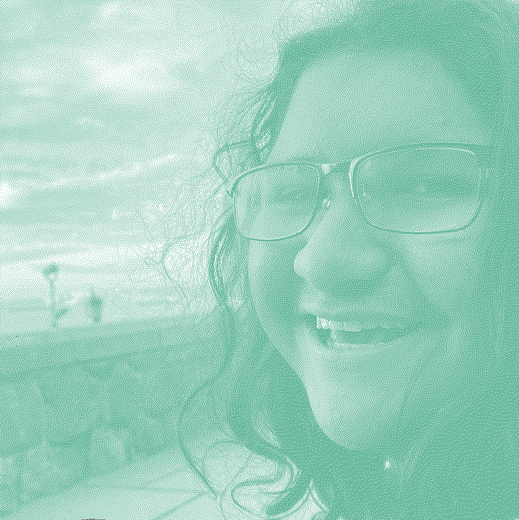

La cueva del oso

Escribir sobre quien soy es una cosa compleja, porque ni siquiera yo se quien soy. De todas formas se puede hacer un intento. Me llamo Jorge Bravo y probablemente si estas leyendo esto me conozcas por ese nombre. También es posible que me conozcas por otros nombre como podrían ser cokelito1, Cosarh o nllptr.
Actualmente estoy estudiando Ingeniería Civil Matemática en la Universidad Técnica Federico Santa Maria. Mis intereses principales son la tecnología, la literatura y el café.
Soy una persona la cual cree fuertemente en el determinismo pero que aun así disfruta de los pequeños placeres que esta vida entrega.